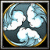

- 主要屬性 敏捷
攻擊範圍 128
- 基礎護甲 4
基礎攻速 1.6
- 基礎攻擊 104 - 120
基礎跑速 300
伊賀流上忍本名服部正成，乃德川十六將之一，又號稱「鬼半藏」。服部家的首領歷代都稱半藏，服部正成、正就兩代侍奉德川家康，名聲非常響亮。
-

-
D
忍法．迷蹤步
-
100/115/130/145/160
-
16
LV1進入隱形狀態，攻擊或是使用技能即會現身，隱形最多維持20秒。LV2 - LV5進入隱形狀態，提升(5/10/15/20)%的移動速度或是使用技能即會現身，現身的第一擊可以額外造成(90/175/260/345)傷害，隱形最多維持20秒。
天生主動技能，提升忍法．影惑之術技能等級可強化此技能
-
-
W
忍法．影惑之術
-
200/165/130/95
-
12
創造出(1/2/3/4)個短暫的分身來迷惑敵人，去除掉身上所有的法術效果。
消耗魔力隨技能等級提升降低，習得此技能等級可強化「忍法．迷蹤步」
-
-
E
忍法．勾鎖鐮
-
120/140/160/180
-
7
對著前方丟出最長(400/600/800/1000)距離的勾鎖鎌，勾鎖鎌碰到的第一個部隊將會被拉回身旁，若是敵人則多造成(100/200/300/400)的傷害。
無視魔法免疫造成傷害
有11%的機會閃避攻擊與(10/14/18/22)%機率造成三倍的傷害。
-
-
T
忍法密傳．隱斬
-
190/190/190
-
145/140/135
以高速在指定地點移動，將會傷害身處其中的敵人，每秒可以發動32道隱斬，每道隱斬造成(75/100/125)傷害，持續4秒。
學習等級為6/12/18，冷卻時間隨技能等級提升降低無視魔法免疫造成傷害，但會視魔法抗性減傷
永久性的提升(3/6/9/12)靈活、智慧和力量。